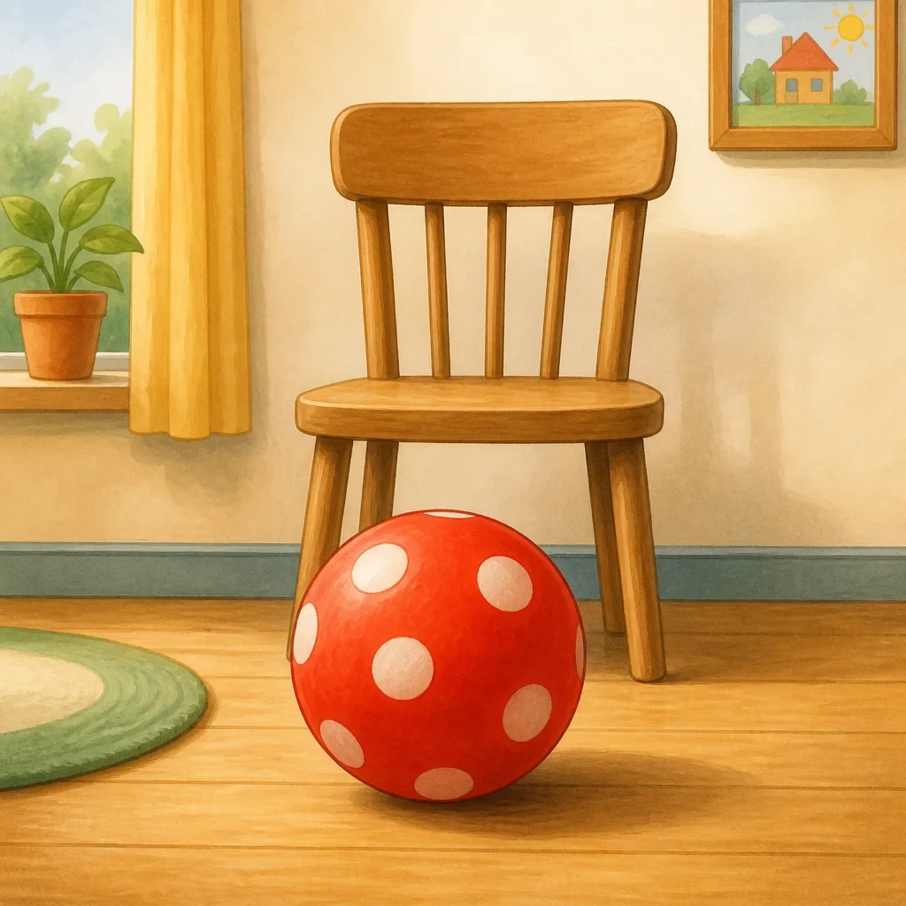
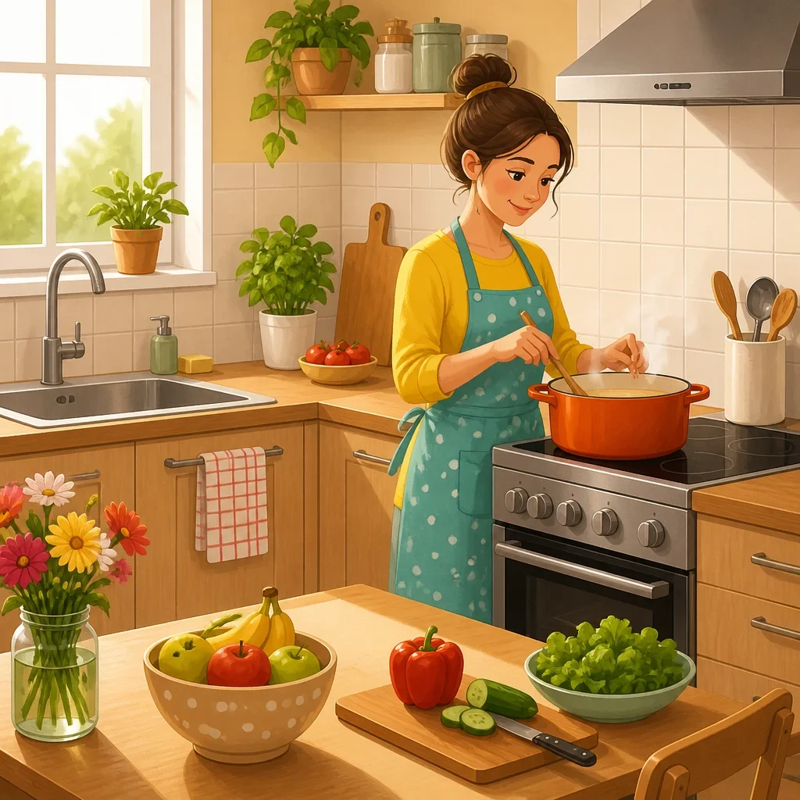
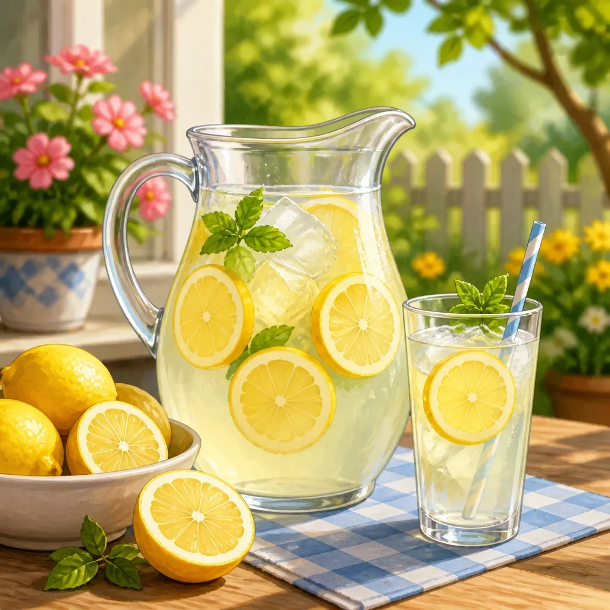

| Preview | File | Size | Words | Czech meanings | Status |
|---|---|---|---|---|---|
fast.webp |
115.8 kB | rapide / vite | honem, rychle / rychlý, prudký, chápavý | generated | |
fresh.webp |
199.4 kB | frais | čerstvý, nově vyrobený; chladivý | generated | |
friend.webp |
128.9 kB | copain | přítel | generated | |
glasses.webp |
94.3 kB | les lunettes | brýle | generated | |
heavy.webp |
139.7 kB | lourde | těžká | generated | |
idea.webp |
87.1 kB | idée | nápad | generated | |
 |
infront.webp |
101.2 kB | devant | před | generated |
 |
kitchen.webp |
143.6 kB | cuisine | kuchyně | generated |
late.webp |
145.6 kB | retard | zpoždění, pozdě | generated | |
 |
lemonade.webp |
130.3 kB | limonade | limonada | generated |